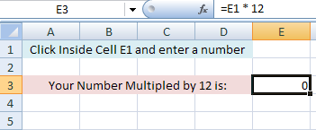
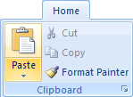
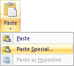
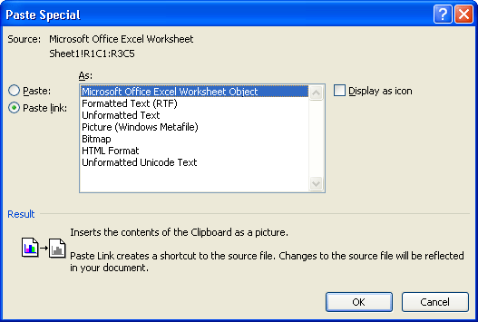
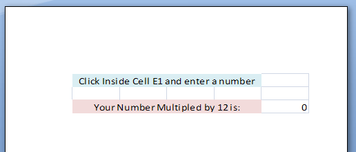
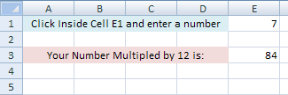
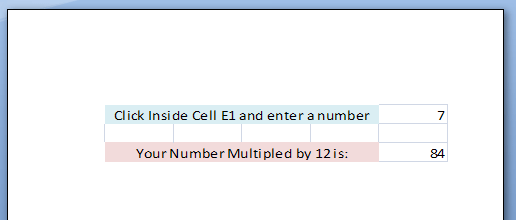

Free
computer Tutorials
|
Free
computer Tutorials
|
|
 HOME HOME
|
|
||||
Microsoft Excel 2007 to 2010Object Linking and EmbeddingObject Linking and Embedding (or OLE for short) is a technique used to insert data from one programme into another. We'll create a simple spreadsheet to illustrate the process, and place it in to Word document. When the Excel spreadsheet is updated, you'll see the Word version update itself as well.
If you don't want the data to update in Word, for example, it's called Embedding; if you do want the data to update, it's called Linking. We're going to do Linking. For this exercise, you need Word 2007 as well as Excel 2007 (or both 2010 versions). First, create the simple spreadsheet below, and enter the formula shown in cell E3:  When you enter a number in cell E1, the answer is placed in cell E3 (don't do this yet). With your spreadsheet created, highlight the cells A1 to E3. Click on the Home tab in Excel. On the Clipboard panel, click on Copy. Now switch to Word 2007/2010. On the Home tab in Word 2007/2010, locate the Clipboard panel, and the Paste item:  Click on Paste. From the Paste menu, select Paste Special:  When you click on Paste Special, you'll see the following dialogue box appear:  Select Microsoft Office Excel Worksheet Object from the dialogue box. On the left hand side, select Paste Link. Click OK.
When you click OK, Word 2007/2010 will insert the spreadsheet from
Excel: 
It's even retained the cell formatting! To check that it really does update in Word 2007/2010, switch back to Excel. Click inside Cell E1 and enter the number 7. Press the Enter key on your keyboard, and you should have the same answer as in the image below:  Now switch back to Word 2007/2010, and you should see that it too has the same answer:  Word 2007/2010 has successfully linked the data from Excel 2007/2010! If you don't want the updates, you would choose Paste from the Paste Special dialogue box instead of Paste Link. You can link or embed things like Charts or Pivot Tables into Word 2007/2010, though, and it can come in really useful.
In the next part, you'll see how to reference formulas and data on other worksheets. |
|||||
|